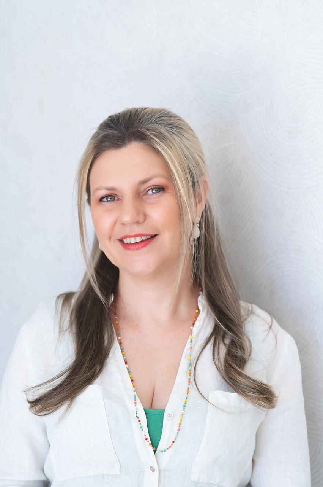
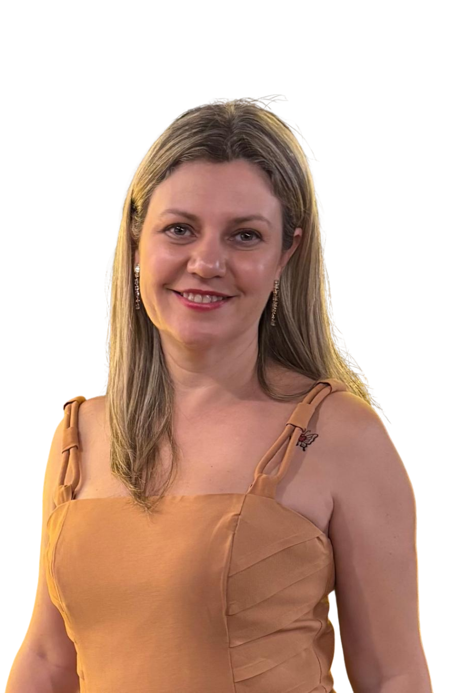
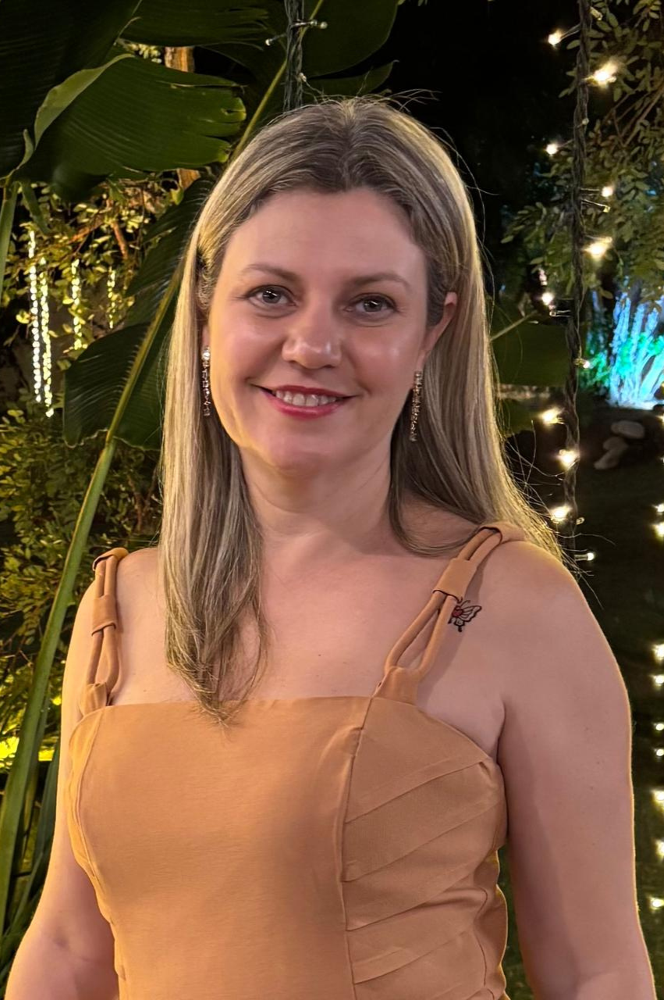

01
Ansiedade
e angústia
Pensamentos acelerados, sensação de aperto no peito, insônia e a impressão de que algo está sempre fora do lugar.
Psicoterapia clínica em uma escuta cuidadosa, ética e singular. Para quem busca compreender o próprio desejo, atravessar momentos difíceis e construir uma vida com mais sentido.

A clínica psicanalítica abre espaço para aquilo que insiste em retornar — sintomas, repetições, angústias — e que merece ser escutado com tempo e cuidado.
Pensamentos acelerados, sensação de aperto no peito, insônia e a impressão de que algo está sempre fora do lugar.
Lidar com ausências, separações, mudanças de fase — quando o tempo do mundo não é o tempo da dor.
Repetições amorosas, conflitos familiares, dificuldades em sustentar a própria voz nos vínculos.
Sofrimento no trabalho, esgotamento, escolhas profissionais e a pergunta: o que eu realmente desejo?
Quando o corpo fala por aquilo que ainda não encontrou palavra — dores, somatizações, mal‑estares.
Cada análise é única. Não trabalho com fórmulas: cada sessão se constrói a partir da palavra de quem fala.
O tempo da análise é o tempo de quem fala — não há receita pronta nem prazo fixo. Cada elaboração tem seu ritmo.
Atuação sustentada por mais de duas décadas de estudo, prática docente e supervisão na linha psicanalítica.
Espaço seguro, confidencial, livre de julgamento. O setting analítico como condição para que a palavra circule.

O sintoma é uma carta endereçada — a clínica é o espaço onde ela pode finalmente ser lida.
Sou psicóloga clínica e psicanalista, com mais de duas décadas dedicadas à escuta. Minha formação se construiu em três cidades — Londrina, Rio e Brasília — sempre na linha freudo‑lacaniana, em diálogo com a clínica hospitalar, a psicodinâmica do trabalho e a psicomotricidade.
Atuo na clínica privada e também como docente em cursos de graduação e pós‑graduação em Psicologia e Psicanálise. A pesquisa e o ensino atravessam minha prática: acredito que pensar a clínica é também uma forma de cuidá‑la.
Atendo adultos em modalidade online e presencial em Brasília, em sessões semanais.
Sessões semanais com duração e enquadre definidos no início da análise. Você escolhe a modalidade que melhor cabe na sua rotina.
Atendimento presencial em consultório próprio, em ambiente reservado e acolhedor, no Plano Piloto.
Sessões por videochamada, com a mesma seriedade e enquadre da clínica presencial — para quem está em qualquer lugar do Brasil ou fora dele.
Supervisão para psicólogos e psicanalistas em formação que desejam construir sua escuta na orientação freudo‑lacaniana.
Encontrei na Camila uma escuta verdadeira. Ela respeita o meu tempo, me ajuda a colocar em palavras o que parecia impossível dizer. Mudou a forma como eu me relaciono comigo mesma.
Profissional preparadíssima, ética e humana. Recomendo de olhos fechados. Os encontros me ajudaram a atravessar um luto que eu não estava conseguindo nomear.
A Camila tem uma postura rara: rigorosa teoricamente e profundamente acolhedora. A análise com ela transformou meu jeito de habitar o mundo e o trabalho.
Reflexões sobre clínica, psicanálise e cotidiano.

A escuta começa pela escolha de marcar o primeiro encontro. Envie uma mensagem e conversamos sobre como sua análise pode começar — online ou em Brasília.
Não há resposta única. A psicanálise trabalha com o tempo de cada sujeito — algumas questões se elaboram em meses, outras pedem anos. O que define é o desejo de continuar.
O setting clássico prevê pelo menos uma sessão por semana, com possibilidade de aumentar conforme a demanda da análise. A regularidade é parte do trabalho.
Sim. Atendo por videochamada em plataforma segura, com o mesmo enquadre e seriedade do presencial. Pacientes em qualquer cidade ou país.
O atendimento é particular. Forneço recibo para reembolso junto ao seu plano de saúde, conforme as regras de cada operadora.
A psicanálise é uma clínica orientada pela escuta do inconsciente, atenta àquilo que escapa ao discurso consciente. Trabalha com o tempo do sujeito, sem metas pré‑definidas, e tem na transferência seu motor.
Envie uma mensagem por WhatsApp ou e‑mail. Marcamos uma primeira conversa para entender sua demanda, esclarecer dúvidas e combinar o início.